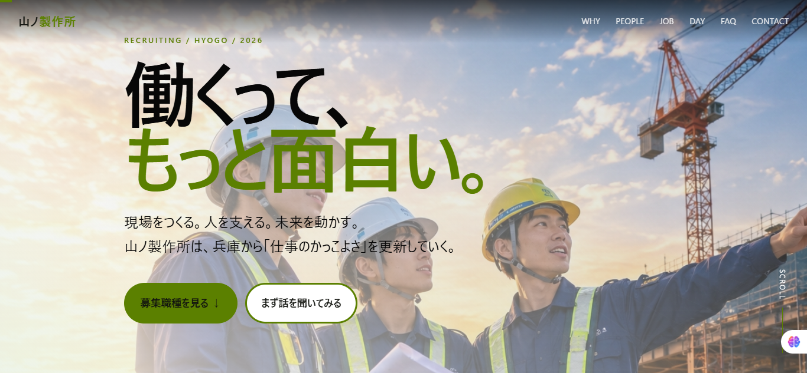
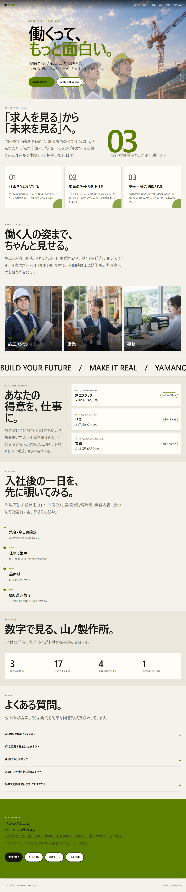
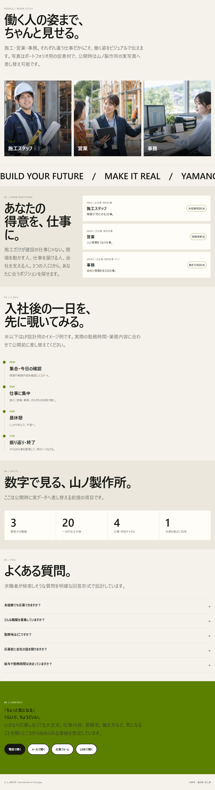
01
↗
山ノ製作所
採用サイト / Construction
大きなことは、できなくても。
必要なことを、ちゃんと。
ひとつずつ作ります。
本業の合間でも、やり取りはできるだけ分かりやすく。無理のない範囲で丁寧に対応します。
これまで作ったもの、これから作っていきたいもの。スクロールしながら、雰囲気やできることを見てもらえたら嬉しいです。



採用サイト / Construction
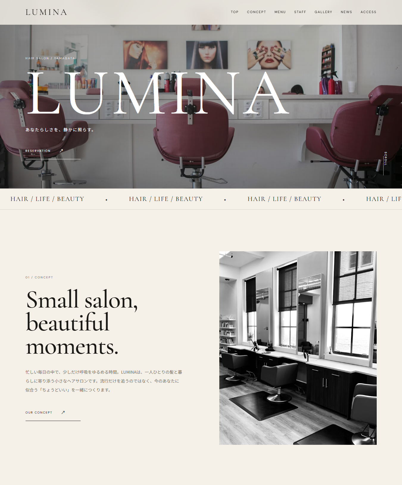
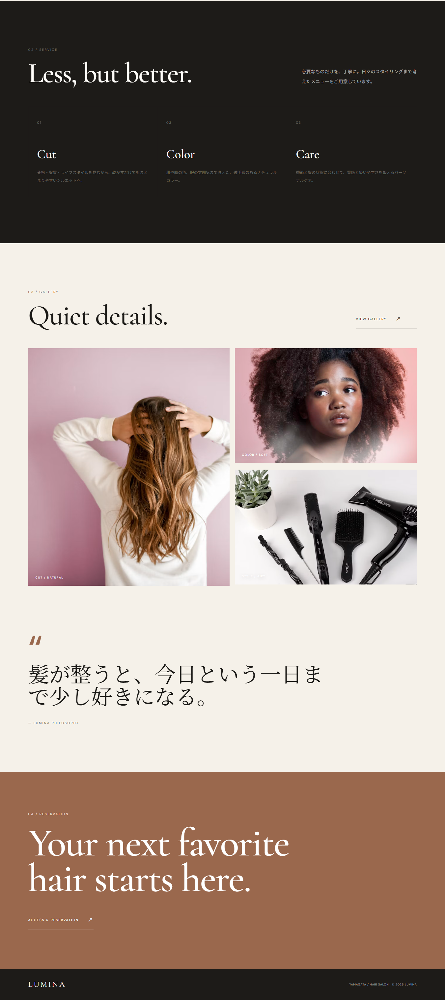
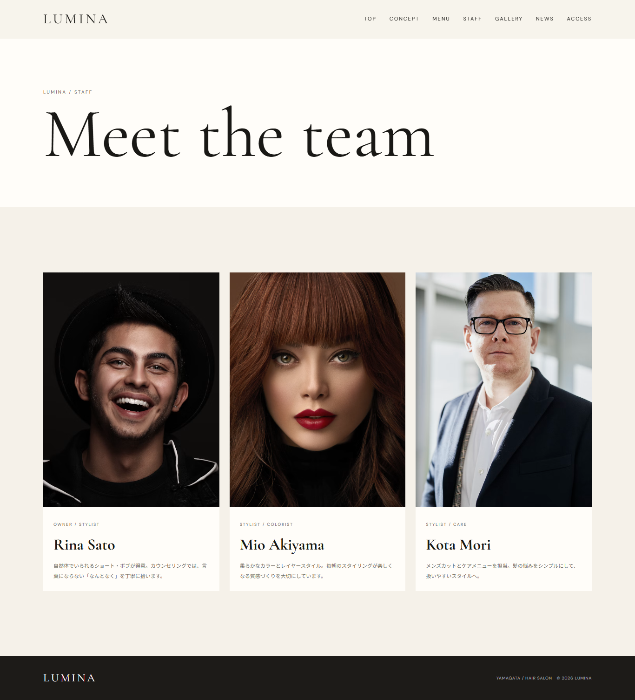
店舗サイト / Beauty
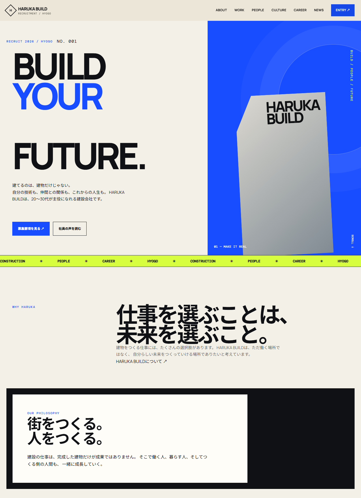
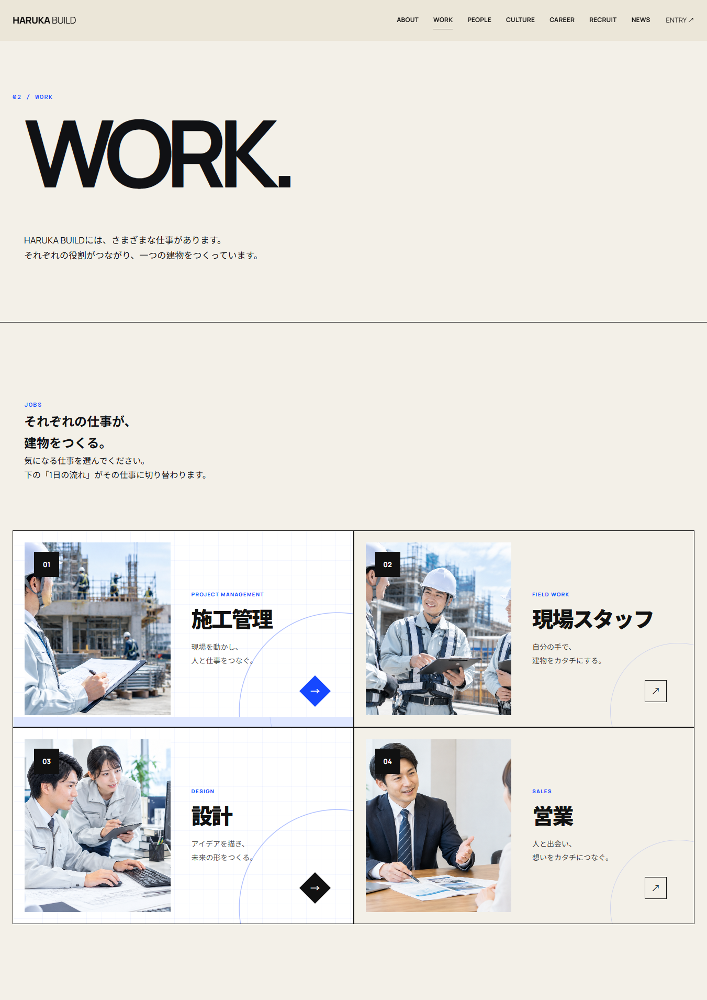
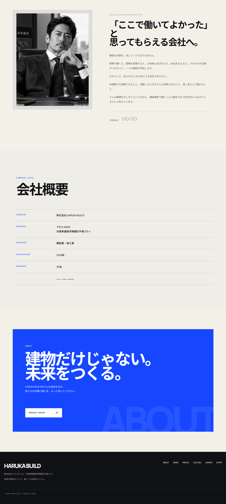
採用サイト / Construction
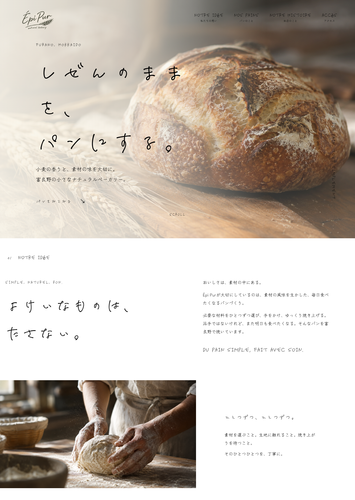
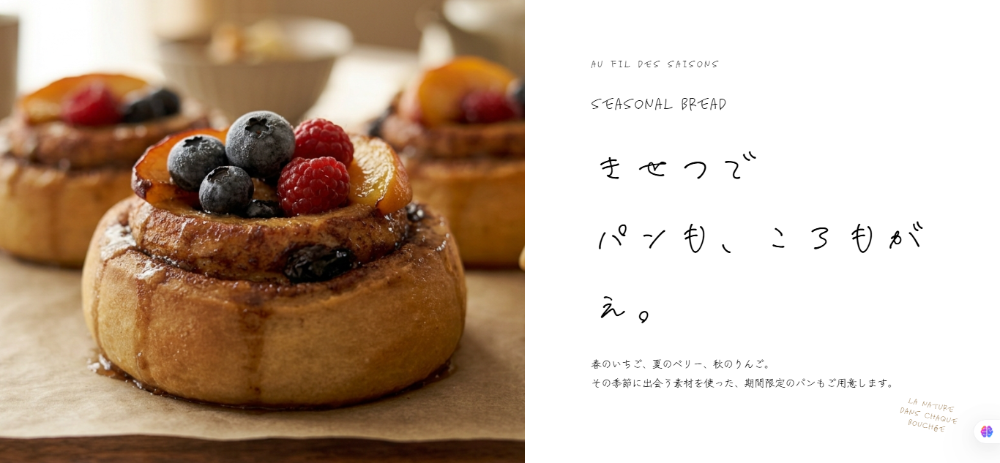
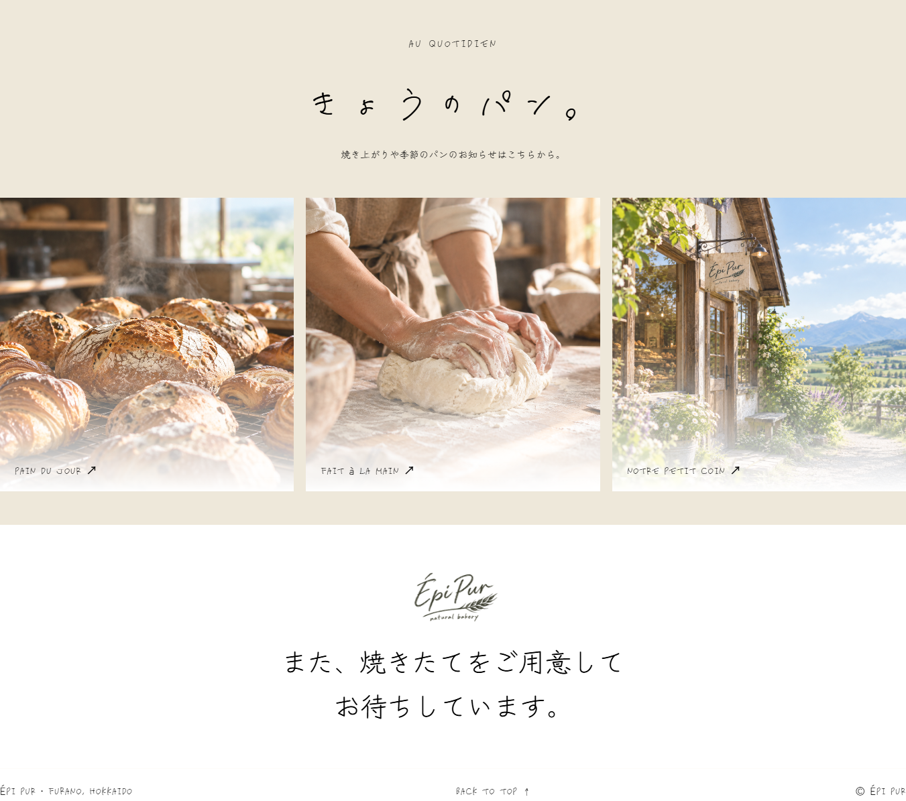
店舗サイト / パン屋さん
派手すぎなくても、ちゃんと伝わる。スマホで見やすく、迷わず使えて、あとから直しやすい。そんな「ちょうどいいWeb」を目指しています。
大きなチームではありません。そのぶん、相談内容を聞いて、必要なものから一緒に作るスタイルです。
企業サイト、採用サイト、店舗サイト、LPなど。情報設計からビジュアルまで、目的に合わせて設計。
HTML / CSS / JavaScriptを使い、レスポンシブ・アニメーションまで丁寧に実装。
ヒアリングからページ構成、導線、コンテンツ整理まで。伝えたいことを「伝わる形」に。
個人でWeb制作をしています。
本業の合間や隙間時間に、少しずつ制作しています。だからこそ、必要以上に大きく構えず、相談しやすく、ひとつひとつ丁寧に。まだ内容が固まっていない段階でも気軽に声をかけてもらえるとうれしいです。
依頼する前に、進め方が見える。そこも安心してもらえるポートフォリオに。
目的・ターゲット・悩みを整理。
構成・導線・必要なコンテンツを設計。
世界観と使いやすさを両立。
レスポンシブ・動きまで実装。
公開・改善まで伴走。
「ホームページがほしいけど、何から決めればいい？」くらいでも大丈夫です。作りたいものや予算、納期など、分かる範囲から一緒に整理します。